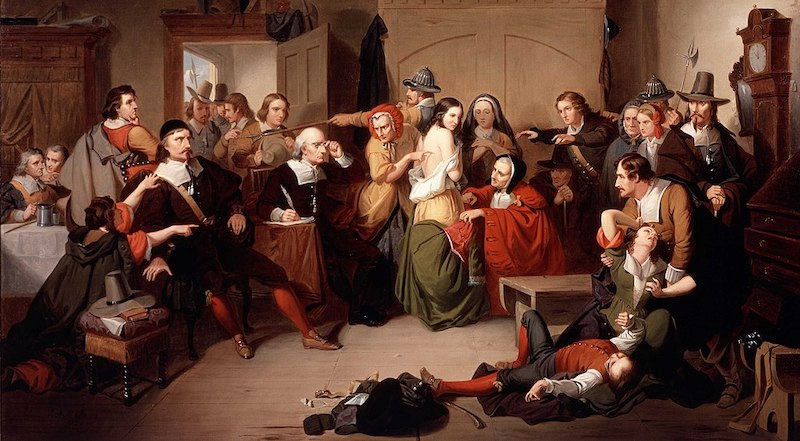

2022-06-24 08:00

If gerrymandering, voter suppression, Dark Money, the Electoral College, an equal number of Senators for states mammoth or tiny, an Imperial Presidency, or pardons for felons weren’t all bad enough for American democracy — now add the Supreme Court, where Christian Nationalists enjoy a 6-3 edge, thanks to a president who actually tried to stage a coup.
To say that democracy is hanging by a thread is total nonsense. We saw the last frayed thread a long time ago. The Court’s six radical Justices (Alito, Barrett, Gorsuch, Kavanaugh, Roberts and Thomas) are now poised to polish off democracy for good.
When Judge Katanji Jackson ultimately replaces Breyer it should escape no one’s notice that an unelected Christian Nationalist majority will prevail over an all-woman and all-minority minority.
Just like America.
The Court has set about gutting even nominal democratic norms to create a veritable Gilead. States no longer have the right to regulate weapons and are obliged to dole out public money to religious schools. Citizens no longer have the right to be read their Constitutional rights by officers in a growing police state.
Legally, women are now Court-regulated wombs with no say over the most private of medical decisions. Instead, a fanciful and unscientific notion opposed by Jews, secularists and others insists that life begins at conception. With the overturn of Roe v. Wade expected at any moment, the Court has arrogated itself the right to make medical and scientific judgements.
If you thought 1692 marked the last of American witch trials you were wrong.
State courts are ready to prosecute abortionists and women who seek abortions. States have sanctioned vigilantes to report fellow citizens and offer bounties for tips if a woman is found guilty of even seeking an abortion. Even those who suffer miscarriages will now have their personal tragedies compounded by state and mob violence. There are now reasonable concerns that data from period tracking apps will be used as evidence in criminal prosecutions.
It remains to be seen if this totalitarian descent into a new chapter of witch trials will result in the lynching of abortionists or death sentences for women and health care providers.
But, given the mob and state violence that Christian nationalism has unleashed, we’d be foolish to rule it out.